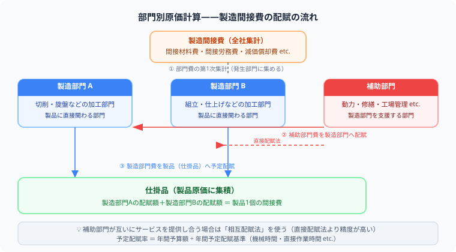

日商簿記2級 | 公開：2026年5月9日 | 更新：2026年6月27日
【簿記2級】部門別原価計算を完全解説
直接配賦法・相互配賦法・部門費配賦表まで例題つき
著者：大谷 一輝（大阪経済大学3回生・日商簿記1級勉強中）
この記事でわかること（5秒まとめ）
- 製造部門＝製品を作る部門、補助部門＝製造部門を支える部門——補助部門費は最終的に全額製造部門へ移す
- 直接配賦法は補助部門同士のやりとりを無視して製造部門だけに配賦——計算がシンプルで試験頻出
- 相互配賦法は補助部門間のやりとりも考慮——第1次配賦→第2次配賦の2段階計算
- 配賦後は部門別の予定配賦率を計算して製品に製造間接費を配賦する
部門別原価計算は「製造間接費をどの製品にどれだけ負担させるか」をより正確に計算するための手法です。工場全体でひとまとめに配賦するよりも、部門ごとに費用を集計して部門固有の配賦率を使う方が、製品原価の精度が上がります。試験では部門費配賦表の作成と、配賦後の予定配賦率計算がセットで問われます。
受
補助部門って製造部門に配賦するんですよね？その後どうするんかよくわかってないんですが……
原価の流れを追うと整理できますよ。補助部門費をまず製造部門へ移して、次に製造部門費（直接費＋配賦された補助部門費）を製品に配賦します。2段階の「移す→配る」です。焦らなくて大丈夫、一緒に流れを整理しましょう。
師
受
直接配賦法と相互配賦法の違いが特に混乱します……
1つだけ覚えてください。「補助部門同士が互いにサービスを提供しているのを無視するか（直接配賦法）、考慮するか（相互配賦法）」の違いだけです。計算の仕方は違いますが、最終的に補助部門費がゼロになる、という目的は同じです。
師
🏭 製造部門と補助部門——原価の流れを全体で把握する

図：製造間接費→製造部門・補助部門→製品への3段階配賦フロー
補助部門費を製造部門に配賦してから製品原価に集計する2段階の流れが、部門別原価計算の核心です。
部門別原価計算には3種類の部門が登場します。まずここを整理しましょう。
| 部門の種類 | 役割 | 具体例 | 費用の行き先 |
|---|
| 製造部門 | 製品を直接製造する | 切削部、組立部、塗装部 | 製品へ直接配賦 |
| 補助部門 | 製造部門を支援する | 修繕部、動力部、材料倉庫部 | まず製造部門へ→製品へ |
| 管理部門 | 工場全体を管理する | 工場事務部 | 製造間接費として集計 |
原価の流れを図で整理すると次のようになります。
補助部門費
（修繕・動力など）
→
製造部門費
（切削・組立など）
→
製品原価
（仕掛品・製品）
なぜわざわざ補助部門を経由するのか？
補助部門（修繕部など）は製品に直接触れない代わりに、製造部門の生産活動を支えます。修繕部のコストを直接「製品A」に乗せることはできないので、まず製造部門へ移してから製品へ配賦します。これが部門別計算の本質です。
📊 部門費配賦表の書き方——全体の設計図を理解する
試験では「部門費配賦表を完成させなさい」という問題が頻出です。配賦表は「誰に何円ずつ移すか」を一覧にしたものです。
部門費配賦表のひな形
| 費目 |
合 計 |
切削部
（製造） |
組立部
（製造） |
修繕部
（補助） |
動力部
（補助） |
| 部門個別費 | 200,000 | 80,000 | 60,000 | 35,000 | 25,000 |
| 部門共通費（配賦後） | 100,000 | 40,000 | 30,000 | 20,000 | 10,000 |
| 部門費合計（第1次集計） | 300,000 | 120,000 | 90,000 | 55,000 | 35,000 |
| 修繕部費の配賦 | 0 | 33,000 | 22,000 | ▲55,000 | 0 |
| 動力部費の配賦 | 0 | 21,000 | 14,000 | 0 | ▲35,000 |
| 製造部門費合計（第2次集計） | 300,000 | 174,000 | 126,000 | 0 | 0 |
表のポイント：補助部門の列は最終的に「0」になります。補助部門費が全額、製造部門へ「移った」ことを意味します。合計列の300,000円は変わらない——お金が増減するのではなく「移動する」だけです。
📐 直接配賦法——シンプルに製造部門だけへ配る
直接配賦法は補助部門同士がサービスを提供し合っていても、その分を無視して、製造部門だけに配賦する方法です。
例題（直接配賦法）
以下のデータを使い、直接配賦法で補助部門費を製造部門に配賦しなさい。
- 修繕部費：60,000円 動力部費：40,000円
- 修繕部費の配賦基準（修繕時間）：切削部 60h、組立部 40h、動力部 20h
- 動力部費の配賦基準（kWh）：切削部 300、組立部 200、修繕部 100
直接配賦法の計算手順
1
配賦基準の合計から「補助部門分を除外」する
修繕部費：切削60＋組立40＝100h（動力部の20hは除外）
動力部費：切削300＋組立200＝500kWh（修繕部の100は除外）
2
修繕部費の配賦額を計算
切削部：60,000 × 60/100 ＝ 36,000円
組立部：60,000 × 40/100 ＝ 24,000円
3
動力部費の配賦額を計算
切削部：40,000 × 300/500 ＝ 24,000円
組立部：40,000 × 200/500 ＝ 16,000円
| 配賦元 |
切削部（製造） |
組立部（製造） |
修繕部（補助） |
動力部（補助） |
| 修繕部費（60,000） | 36,000 | 24,000 | ▲60,000 | — |
| 動力部費（40,000） | 24,000 | 16,000 | — | ▲40,000 |
| 配賦合計 | 60,000 | 40,000 | 0 | 0 |
⚠️ 直接配賦法の落とし穴：配賦基準の分母を間違えない
修繕部費を配賦するとき、分母は「切削＋組立＋動力」の合計ではなく「切削＋組立」だけです。動力部（補助部門）への配賦分を無視するのが直接配賦法のルールです。これを忘れると全額がずれます。
🔄 相互配賦法——補助部門間のやりとりも考慮する
相互配賦法は補助部門同士のサービス提供も配賦に含める方法です。直接配賦法より正確ですが計算は2段階になります。
第1次配賦（補助部門同士も含めて配賦）
- 補助部門費を全ての部門（製造部門＋他の補助部門）へ配賦
- 配賦基準の分母に補助部門も含める
- この段階では補助部門の残高が0にならない
第2次配賦（他の補助部門から受け取った分を配賦）
- 第1次配賦で他の補助部門から受け取った分だけを製造部門へ配賦
- この段階では製造部門だけに配賦（補助部門への配賦は繰り返さない）
- 補助部門の残高が0になる
例題（相互配賦法）
修繕部費：60,000円 動力部費：40,000円
修繕部費の配賦基準（修繕時間）：切削60h、組立40h、動力20h
動力部費の配賦基準（kWh）：切削300、組立200、修繕100
第1次配賦（全部門に配賦）
修繕部費（60,000円）の第1次配賦——分母は全部門合計（60＋40＋20＝120h）
切削部：60,000 × 60/120 ＝ 30,000円
組立部：60,000 × 40/120 ＝ 20,000円
動力部：60,000 × 20/120 ＝ 10,000円（←直接配賦法では無視する部分）
動力部費（40,000円）の第1次配賦——分母は全部門合計（300＋200＋100＝600kWh）
切削部：40,000 × 300/600 ＝ 20,000円
組立部：40,000 × 200/600 ＝ 13,333円
修繕部：40,000 × 100/600 ＝ 6,667円（←直接配賦法では無視する部分）
第2次配賦（製造部門のみへ配賦）
第1次配賦後の補助部門残高：修繕部 6,667円（動力部から受取）、動力部 10,000円（修繕部から受取）
修繕部の残高（6,667円）を製造部門だけに配賦——分母は切削＋組立（60＋40＝100h）
切削部：6,667 × 60/100 ＝ 4,000円
組立部：6,667 × 40/100 ＝ 2,667円
動力部の残高（10,000円）を製造部門だけに配賦——分母は切削＋組立（300＋200＝500kWh）
切削部：10,000 × 300/500 ＝ 6,000円
組立部：10,000 × 200/500 ＝ 4,000円
| 配賦フロー | 切削部（製造） | 組立部（製造） | 修繕部（補助） | 動力部（補助） |
|---|
| 第1次：修繕部費 | 30,000 | 20,000 | ▲60,000 | 10,000 |
| 第1次：動力部費 | 20,000 | 13,333 | 6,667 | ▲40,000 |
| 第1次配賦後残高 | 50,000 | 33,333 | 6,667 | 10,000 |
| 第2次：修繕部残高 | 4,000 | 2,667 | ▲6,667 | — |
| 第2次：動力部残高 | 6,000 | 4,000 | — | ▲10,000 |
| 最終配賦合計 | 60,000 | 40,000 | 0 | 0 |
直接 vs 相互の違い（同じ例で比較）
切削部が負担する額：直接配賦法 60,000円、相互配賦法 60,000円（合計は同じ）
ただし内訳の振り分けが変わります——補助部門間のやりとりを正確に反映する分、相互配賦法のほうが実態に近い配賦になります。
💹 配賦後の予定配賦率計算——製品に製造間接費を乗せる最終ステップ
部門費配賦表が完成したら、それぞれの製造部門について予定配賦率を計算し、実際に製品へ配賦します。
予定配賦率の計算式
予定配賦率 ＝ 製造部門費予算額 ÷ 予定操業度（基準操業度）
例題（配賦後の予定配賦率）
配賦後の切削部費：180,000円、予定直接作業時間：600h
実際の製品Aへの直接作業時間：40h。製品Aの切削部への製造間接費配賦額を求めなさい。
計算
予定配賦率 ＝ 180,000 ÷ 600h ＝ 300円/h
製品Aへの配賦額 ＝ 300円 × 40h ＝ 12,000円
✏️ 仕訳パターン——配賦の仕訳を整理する
補助部門費を製造部門へ配賦するとき
仕訳（修繕部費36,000を切削部へ、24,000を組立部へ）
切削部費 36,000/修繕部費 36,000
組立部費 24,000/修繕部費 24,000
製造部門費を仕掛品（製品）へ配賦するとき
仕訳（切削部の予定配賦額12,000を仕掛品へ）
仕掛品 12,000/切削部費 12,000
⚔ Study Quest で工業簿記を攻略しよう
部門別計算・予定配賦・差異分析の学習記録をRPG感覚で管理。試験日まで継続できます。
無料で始める →
📋 まとめ：部門別原価計算の解き方チェックリスト
補助部門費の行き先まず製造部門へ移す（最終的に補助部門費はゼロになる）
直接配賦法の分母補助部門を除いた製造部門だけの合計を使う
相互配賦法第1次（全部門へ）→ 第2次（製造部門だけへ）の2段階
配賦後の予定配賦率製造部門費予算 ÷ 予定操業度 → 製品へ乗せる
仕訳の方向補助部門費（貸方）→ 製造部門費（借方）→ 仕掛品（借方）
よくある質問
❓ 直接配賦法と相互配賦法はどう使い分けるのですか？
問題文の指示に従います。「直接配賦法で配賦しなさい」と書いてあれば直接配賦法、「相互配賦法で」なら相互配賦法です。試験では問題文に必ず指定があります。なお、日商簿記2級では直接配賦法が頻出です。
❓ 直接配賦法で配賦基準の分母に補助部門を含めてもいいですか？
含めてはいけません。直接配賦法では補助部門間のやりとりを「なかったこと」にするので、分母は製造部門の合計だけです。ここを間違えると全ての配賦額がずれます。
❓ 相互配賦法の第2次配賦では補助部門への配賦はしないのですか？
しません。第2次配賦では製造部門だけに配賦します。第1次で補助部門同士のやりとりを反映済みなので、第2次は「製造部門が受け取った残高だけを製造部門同士の間で動かす」ステップではなく、「補助部門の残高を最終処理する」ステップです。補助部門同士の配賦を繰り返すと無限ループになるため、第2次では必ず製造部門のみに配賦します。